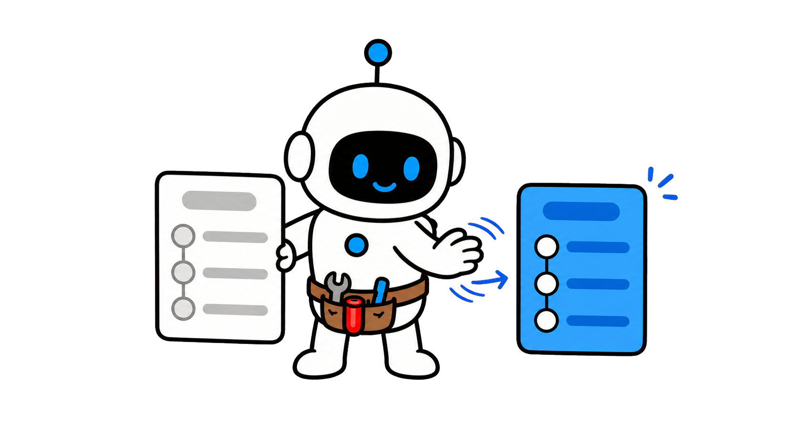

Turn a good workflow into a reusable Skill


Turn a goodworkflow intoa reusableSkill
Turn a good workflow into a reusable Skill
OpenAI: skills make workflows reusable

OpenAI OpenAI: skills make workflows reusable
OpenAI: skills make workflows reusable
OpenAI: skills make workflows reusable
Repeated setup steals attention

Repeated setup stealsattention
The seven-field AI Agent Skill Template

The seven-field AI Agent SkillTemplate
Save the method, then put it to work

SAVE THIS Carry the reusable method into the next runKeep judgment for what is new
Carry the reusable method into the next runKeep judgment for what is new
Carry the reusable method into the next runKeep judgment for what is new
Chapter 2
Find the repeat
Start with a task that keepsreturning, not with a documentyou hope people will read.

Start from a recognizable trigger
Start from a recognizabletrigger

Start from a recognizable trigger

Start from a recognizabletrigger
Stable intent makes reuse possible

≠

Stable intent makes reusepossible
Stable intent makes reuse possible

Stable intent makes reusepossible
Copying is not yet a skill

Copying is notyet a skill
Write when to use it

Write when to use it
1.Capture a recurring job
2.Name the trigger
3.Keep discovery flexible
1.Capture a recurring job
2.Name the trigger
3.Keep discovery flexible
1.Capture a recurring job
2.Name the trigger
3.Keep discovery flexible
Chapter 3
Keep the useful context
A skill should fetch thecontext that changes thedecision, not every detailfrom the last project.

Keep only decision-changing context


Keep onlydecision-changingcontext
Keep only decision-changing context
Keep onlydecision-changingcontext
Keep only decision-changing context
Put resources beside the decision
Put resources beside thedecision
Put resources beside the decision

Put resourcesbeside thedecision
Turn caution into observable constraints
≠

Turn caution intoobservable constraints
Memory stores; a skill directs work
Memory stores; a skill directswork
1.Declare the useful inputs
2.State the constraints
3.Attach resources at use time
1.Declare the useful inputs
2.State the constraints
3.Attach resources at use time
1.Declare the useful inputs
2.State the constraints
3.Attach resources at use time
Chapter 4
Write the decisions
The heart of a skill is a smallsequence of decisions that acapable teammate couldinspect and challenge.
Write decisions, not theater
≠
Write decisions, nottheater
Write decisions, not theater
Write decisions, not theater
Every step should change the state
Every stepshould changethe state
Every step should change the state

Every stepshould changethe state
Every step should change the state
Branch on consequential differences
Branch on consequentialdifferences

Confidence is not evidence
Confidence is not evidence
1.Separate goal and method
2.Expose real decisions
3.Require evidence for risk
1.Separate goal and method
2.Expose real decisions
3.Require evidence for risk
1.Separate goal and method
2.Expose real decisions
3.Require evidence for risk
Chapter 5
Define the handoff
A reusable workflow ends withan output another person orAgent can check, edit, andcontinue.
Define an inspectable handoff
Define an inspectablehandoff
Define an inspectable handoff
Define aninspectablehandoff
Make unknowns easy to find
Make unknowns easy to find
Make unknowns easy to find
Make unknowns easy to find
Match the check to the work
Match thecheck to thework
Make quality inspectable
Make quality inspectable
1.Define the output contract
2.Keep uncertainty visible
3.Finish with a real check
1.Define the output contract
2.Keep uncertainty visible
3.Finish with a real check
1.Define the output contract
2.Keep uncertainty visible
3.Finish with a real check
Chapter 6
Improve by evidence
Treat a skill as a maintainedasset: revise it after failurepatterns, not after everypassing mood.

Failures are revision evidence
Failures arerevisionevidence
Failures are revision evidence
Failures arerevisionevidence
Failures are revision evidence
Small skills compose better
Small skills compose better
Small skills compose better
Small skillscomposebetter
Test beyond the original example
≠
Test beyond the originalexample
Keep the shared contract lean
Keep the shared contract lean
1.Revise from failures
2.Compose small skills
3.Retest on new work
1.Revise from failures
2.Compose small skills
3.Retest on new work
1.Revise from failures
2.Compose small skills
3.Retest on new work
Capture, direct, check, improve
Capture,direct,check,improve
A skill turns success into a method
≠

A skill turns success intoa method
Start small, then revise from evidence
Start small, then revise fromevidence
OpenAI describes skills as reusable, shareable workflows for specific tasks.
A skill can carry a name, instructions, and supporting resources so the next
run starts from a useful operating pattern rather than a blank chat.
The loss is familiar: you finally get a good research brief, handoff,
analysis, or draft, then reconstruct the same context, constraints, and
formatting rules next week.
The result is inconsistency before the real work even begins.
In this video, you will build an AI Agent Skill Template with seven fields:
trigger, inputs, workflow, output contract, guardrails, evidence, and
revision note.
It is small enough to use and explicit enough to inspect.
This video is packed with practical, high-value insights to help you get
better at using AI.
It's a longer one, so follow Tiny Agent and save it so you don't lose it.
Start with a task that keeps returning, not with a document you hope people
Look for a repeat that has a recognizable starting signal.
will read.
For example, a weekly customer summary starts when fresh notes and product
data arrive.
The skill should describe that trigger, not merely say that it creates
A repeatable task has stable intent, even when the source material changes.
summaries.
If the goal, audience, and success condition are different every time, you
still have exploration, not a workflow ready to package.
Do not mistake frequent copying for repeatability.
A copied prompt may contain a useful sentence, but a skill earns its place
when the same decisions, checks, and deliverable shape recur across several
Write the trigger in ordinary language: when a decision-ready update is
real runs.
needed from new evidence, use this skill.
That sentence prevents a good workflow from being activated for a nearby but
different job.
Chapter recap.
First, A skill begins with a recurring job, not a generic topic.
Second, The trigger should make clear when the workflow applies.
Third, One-off exploration can remain a conversation.
A skill should fetch the context that changes the decision, not every detail
from the last project.
Next, list the inputs that change the answer.
A source folder, a customer brief, a target audience, a deadline, and an
approved vocabulary can matter.
Old decorative examples usually do not.
Resources work best when they sit beside the step that needs them.
A research workflow can point to the source standard during evidence
collection and to the delivery template only when the final brief is
Make constraints concrete.
assembled.
Instead of saying be careful, specify what must not be invented, which
records are authoritative, which action requires approval, and how
uncertainty should be shown to the reviewer.
This is also where a skill differs from memory.
Memory can remember a preference or prior fact.
A skill tells the Agent which context to retrieve, how to use it, and what
to do when it conflicts.
Chapter recap.
First, Inputs explain what the Agent can use.
Second, Constraints explain what it must protect.
Third, References belong beside the step that needs them.
The heart of a skill is a small sequence of decisions that a capable
teammate could inspect and challenge.
Now write the workflow as a short sequence of decisions.
Begin with the goal, inspect the inputs, identify missing information,
choose a method, create the draft, and verify the promised outcome.
Each step needs a reason to exist.
If a step only repeats what the previous step already required, remove it.
If a step changes the evidence, the choice, or the handoff, make that change
Use branches sparingly.
visible.
A useful branch sounds like this: if the source is incomplete, ask for the
missing record and label the draft as provisional.
It does not try to predict every imaginable exception.
For high-risk claims, demand an evidence move.
The Agent can cite the record, show a calculation, name an assumption, or
ask a human to decide.
A confident sentence alone is not a verification step.
Chapter recap.
First, Separate the goal from the method.
Second, Write branches only where a real choice exists.
Third, Ask for evidence when a judgment is high risk.
A reusable workflow ends with an output another person or Agent can check,
edit, and continue.
A good skill ends with a handoff contract.
Define the audience, format, required fields, and the decision the output
should support.
This lets a reviewer check the result without reverse-engineering the
original prompt.
Include an uncertainty rule.
If a source is missing, if two records disagree, or if a decision depends on
human preference, the output should surface that condition instead of
burying it in fluent language.
The final check should match the task.
A release note needs factual and link checks.
A customer message needs audience and permission checks.
A plan needs owners, next steps, and unresolved decisions.
This makes skills shareable.
Another teammate does not need your private intuition to judge whether the
run succeeded.
They can inspect the input, the decisions, the output contract, and the
Chapter recap.
evidence.
First, Specify the format before execution starts.
Second, Make unknowns visible instead of hiding them.
Third, Include a final check that matches the task.
Treat a skill as a maintained asset: revise it after failure patterns, not
after every passing mood.
Do not freeze a skill after its first success.
Record the failure pattern that led to a revision: a missing input, a
misleading default, a weak output field, or a check that looked reassuring
but missed the real error.
Keep the unit small.
One skill can gather evidence, another can turn evidence into a decision
brief, and a third can run a release check.
Smaller skills are easier to understand, test, and recombine.
Retest after a revision on fresh work.
Replaying the exact example that inspired the skill proves only that you
preserved the past.
A new input reveals whether the instructions carry the right judgment
When a skill becomes too long, ask which part is truly shared and which part
forward.
belongs in a resource, a template, or a separate specialized skill.
The goal is reliable guidance, not a monument to every past lesson.
Chapter recap.
First, Record the failure that justified a revision.
Second, Keep small skills composable rather than creating one giant prompt.
Third, Retest the workflow on a fresh task.
The practical sequence is simple.
Capture a real repeat, name the trigger, bring in the context that changes
decisions, write the few steps that matter, define the handoff, and test the
result against a fresh case.
That is how an AI Agent stops replaying your best prompt and starts using a
maintained working method.
The skill does not make the Agent infallible.
It makes the work easier to inspect, improve, and reuse.
Try the template on one small recurring task this week.
Write the trigger in one sentence, attach only the source material that
changes a decision, name one check a reviewer can actually perform, and
record one uncertainty that the Agent must not smooth over.
If that version helps a second real run, keep it.
If it fails, revise the field that failed instead of adding unrelated
instructions everywhere.
Follow Tiny Agent.
Why do AI Agents
lose good methods
on long
tasks?


Follow Tiny Agent
Tiny Agent helps youget better at using AI.